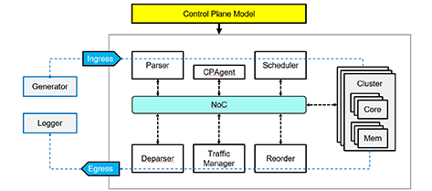
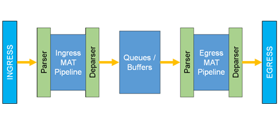

PFPSIM Methodology {% capture my-include %}{% include methodology.md %}{% endcapture %} {{ my-include | markdownify }} PFPGEN Offical FAD compiler for pfpsim models. Compiles FAD specification of target architecture to SystemC/C++ code. PFPSIM C++11 Runtime Library for simulating pfpsim models generated from FAD by pfpfgen. PFPDB Packet level debugger for PFPSIM Models. Debug your programs and architecture models at the packet level. Example Models  Simple NPU A pfpsim model of a generic Network Processing Unit  Simple RMT A model of the Reconfigurable Match Tables architecture specified in this paper [pdf].